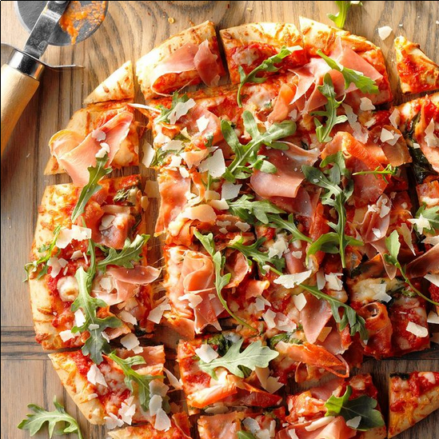

Arugula Pizza
Incredients
- 1/2 cup pizza sauce
- 1 prebaked 12-inch pizza crust (14 ounces)
- 1 cup shaved Parmesan cheese
- 3 ounces thinly sliced prosciutto
- 2 cups fresh arugula
- Additional fresh arugula, optional
Directions
-
Preheat oven to 425°. Spread sauce over pizza crust. Layer with 1/2
cup Parmesan cheese, prosciutto and arugula; top with remaining
cheese. Bake directly on oven rack until edges are lightly browned,
10-12 minutes. Cut into small squares. If desired, top with more
arugula.
Nutrition Facts
- 2 pieces : 204 calories
- 7g fat (3g saturated fat)
- 17mg cholesterol
- 689mg sodium
- 23g carbohydrate (2g sugars, 1g fiber)
- 12g protein